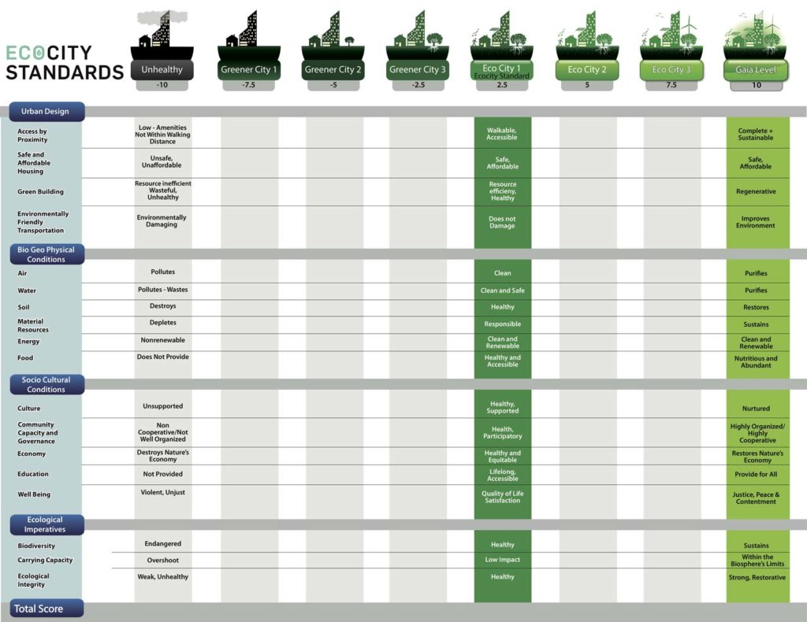
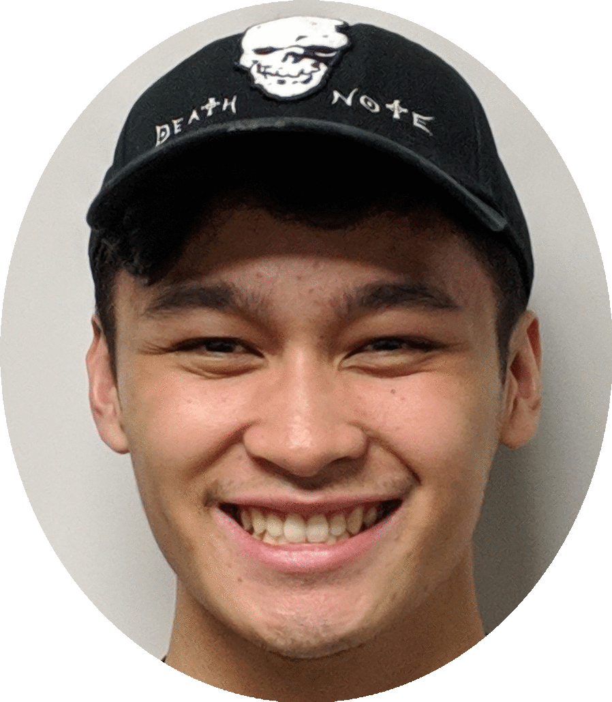

What is VEN?
VEN, short for Vancouver Eco News, is a Vancouver-based news aggregator that collects articles on the environment from our various trusted sources, and places them all in one webpage for easy, comfy viewing! You may also anonymously chat about these articles with other Vancouverites using VEN’s built in commenting functionality!
This website was built using HTML5, CSS3, JavaScript, Bootstrap and ReactJS on the front-end, while MongoDB and NodeJS were used for the back-end. Our website is hosted on Amazon Web Services. It was also specifically designed for BCIT’s second-term Projects Course, which was sponsored by the folks at EcoCity.
Our Mission
Vancouver Eco News was created so that Vancouverites (and others around the world) could easily keep up with all of the eco-based news that our city has to offer. Normally, if one is concerned with environmental topics, it can be a pain to jump from website to website to find out that is happening with our environment.
We hope to alleviate those problems with VEN- your local news aggregate for all things green! With all of these articles condensed onto one website, it’ll be far easier to see the bigger picture of our environment, and how we fit into EcoCity’s standards for a truly green city.
{kind=link}
Only with proper knowledge can we truly make Vancouver a true EcoCity. Be sure to check VEN daily to see Vancouver’s current status, and perhaps learn what you can do to help our environment- every little bit helps!
The People of VEN
Here is the team of nerds that worked on VEN.
Manuel
Manuel is a taekwondo enthusiast and instructor, who now practices web development at BCIT. He has a passion for gaming and anime, and also enjoys combat sports and exercise.
Joel
Joel is a hard worker who did labour jobs for three years before coming to BCIT so that he could join the growing industry of programmers. He’s a fan of gaming, especially platformer games.
Paolo
Paolo is fresh out of highschool, and he aspires to become a fully-fledged game developer, and is fascinated by the games industry and all of its happenings. For now though, he is more than happy to study at BCIT.
Alec
Alec is an approachable person that loves to learn and work. He strives to learn new things every day, and become the best that he can be. In his spare time, he loves to hang out with friends or play video games like DotA.
Zachary
Zachary is the product owner of Vancouver Eco News. He’s quite active, playing plenty of sports- specifically, basketball and soccer. In his spare time, he also enjoys playing tabletop games with his friends.